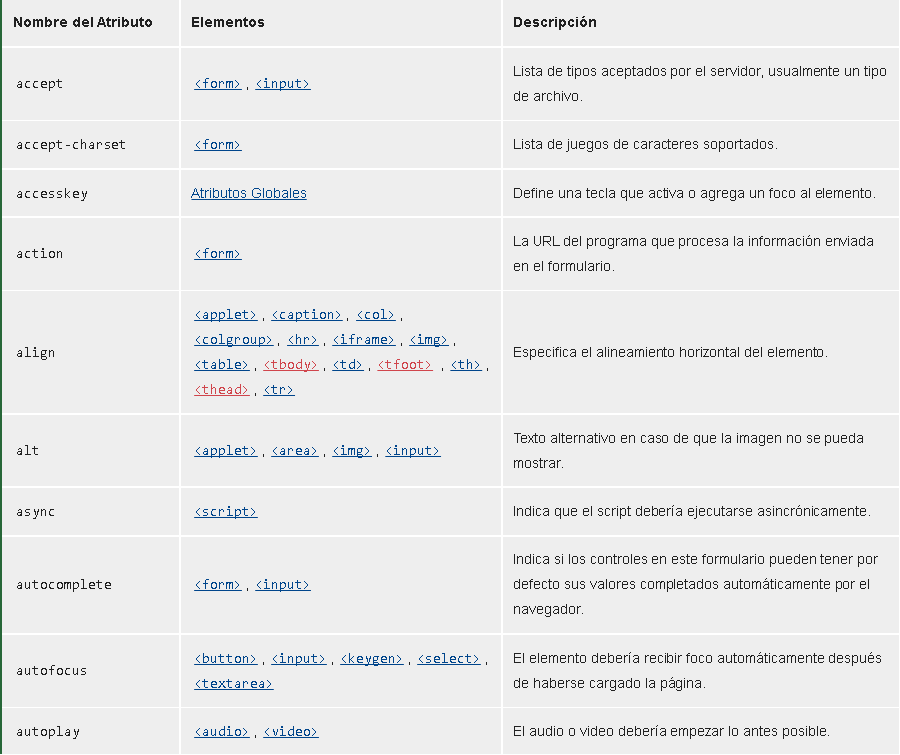
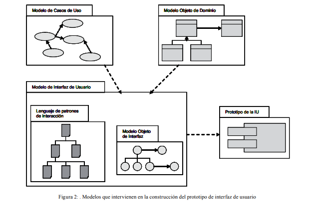
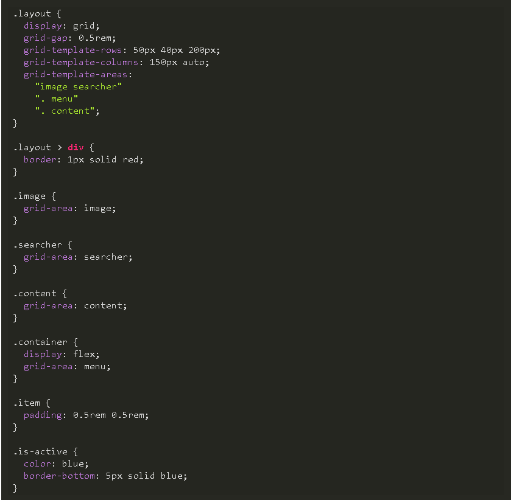
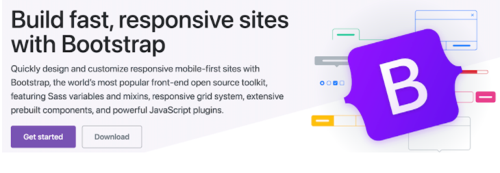

Contenido:
Etiquetas Básicas de HTML, atributos y valores
Referencia de Atributos HTML
Los elementos en HTML tienen atributos; estos son valores adicionales que configuran los elementos o ajustan su comportamiento de diversas formas para cumplir los criterios de los usuarios.
Algunas - Referencia de Atributos HTML
Referencia Bibliografica:
(Referencia de Atributos HTML - HTML, s. f.)Referencia de Atributos HTML - HTML: Lenguaje de etiquetas de hipertexto | MDN. (s. f.). Recuperado 17 de junio de 2021, de https://developer.mozilla.org/es/docs/Web/HTML/Attributes
La interfaz de usuario, Interacción Humano Ordenador
La Interacción Humano-Computador es una disciplina que abarca el diseño, implementación y evaluación del componente interactivo de las aplicaciones computacionales dirigidas a los humanos. Por su esencia, es un área multidisciplinaria donde convergen diversos tipos de especialistas. Este trabajo destaca la importancia de esta disciplina considerando el nuevo rol social de la informática en el contexto de los últimos años
Referencia Bibliografica:
Acosta, A., & Zambrano, N. (s. f.). IMPORTANCIA, PROBLEMAS Y SOLUCIONES EN EL DISEÑO DE LA INTERFAZ DE USUARIO. 10.
Etiquetas semánticas, Listas y enlaces
El procesamiento de información con anotación semántica permite identificar la intención de búsqueda del usuario y ajustar el resultado según el contexto de la información. La presente investigación propone realizar el procesamiento semántico de información para mejorar la relevante de los resultados brindados a los usuarios cuando acceden a un Sistema de Recuperación de Información.

Referencia Bibliografica:
Viltres Sala, H., Rodríguez Leyva, P., Febles, J. P., & Estrada Sentí, V. (2018). Procesamiento Semántico de información en Sistemas de Recuperación de Información. Revista Cubana de Ciencias Informáticas, 12(1), 102-116. http://scielo.sld.cu/scielo.php?script=sci_abstract&pid=S2227-18992018000100008&lng=es&nrm=iso&tlng=en
Flex Box, CSS Grid
Con el lanzamiento de CSS Grid he venido escuchado mucho la pregunta si este nuevo sistema de layouts reemplaza Flexbox. Desde mi punto de vista no lo hace del todo. Con CSS Grid puedes hacer cosas que con Flexbox no y viceversa. Lo ideal sería usarlos en conjunto. Puedes tener un contenedor con propiedad de grid y que sus hijos tengan propiedad flex y a la inversa también. Por ejemplo, si únicamente necesitas que un contenedor esté alado de otro, por simplicidad yo usaría flexbox en lugar de grid. Por otro lado, si tu layout está compuesto por filas y columnas que van cambiando en sus versiones responsive entonces CSS Grid te facilitará el trabajo.
Referencia Bibliografica:
Flexbox vs CSS Grid: ¿Cuál es la diferencia? (s. f.). Platzi. Recuperado 17 de junio de 2021, de https://platzi.com/blog/flexbox-vs-css-grid-cual-es-la-diferencia/
Frameworks CSS, Posicionamiento Web
Creación rápida de prototipos: Con Bootstrap, casi no hay necesidad de pensar en el complicado posicionamiento CSS y las incompatibilidades del navegador. Todo lo que necesita hacer es escribir el HTML y luego aplicar las clases CSS apropiadas hace que la capacidad de respuesta cobre vida. Gran ecosistema: A partir de hoy, Bootstrap tiene el ecosistema más grande entre los marcos de front-end. La cantidad de diseños de sitios web, temas, paneles de administración, componentes de la interfaz de usuario, etc., creados con Bootstrap es alucinante y sigue mejorando. Tanto para los consultores como para las empresas de productos, esto significa que los elementos prediseñados y el apoyo de la comunidad siempre serán suficientes. Respaldado por Twitter: Una tendencia emergente en el código abierto es el aumento de proyectos patrocinados por una entidad comercial. La mayoría de las veces, estas entidades crean negocios rentables en torno a su oferta. Kotlin (JetBrains), WordPress (Automattic, Inc.), Angular (Google), React (Facebook), etc., son algunos ejemplos. Cuando un proyecto está respaldado por una entidad establecida y no es un programa de una sola persona, le da fe a la comunidad (especialmente a los clientes empresariales) de que el proyecto tendrá una hoja de ruta clara y un futuro a largo plazo. Una gran colección de componentes: Bootstrap ofrece, listos para usar, casi todos los componentes de la interfaz de usuario que probablemente necesite. Navegación, formularios, tarjetas, modales, botones, insignias, barras de progreso, alertas. . . Lo que sea, y Bootstrap lo tiene. Para muchas empresas, esto prácticamente reduce la necesidad de tener un equipo de front-end dedicado. Soporte LESS y SASS: Entre los frameworks CSS masivamente populares, Bootstrap es el único que admite tanto LESS como SASS. Sí, lo sé, no usas LESS (como ningún desarrollador que se precie debería hacerlo, ¿verdad?), Pero bueno, hay proyectos masivos que dependen de LESS. Por supuesto, no puede elegir ninguno y escribir sus archivos CSS simples.
Referencia Bibliografica:
14 mejores marcos CSS para desarrolladores front-end. (2018, octubre 6). Geekflare. https://geekflare.com/es/best-css-frameworks/